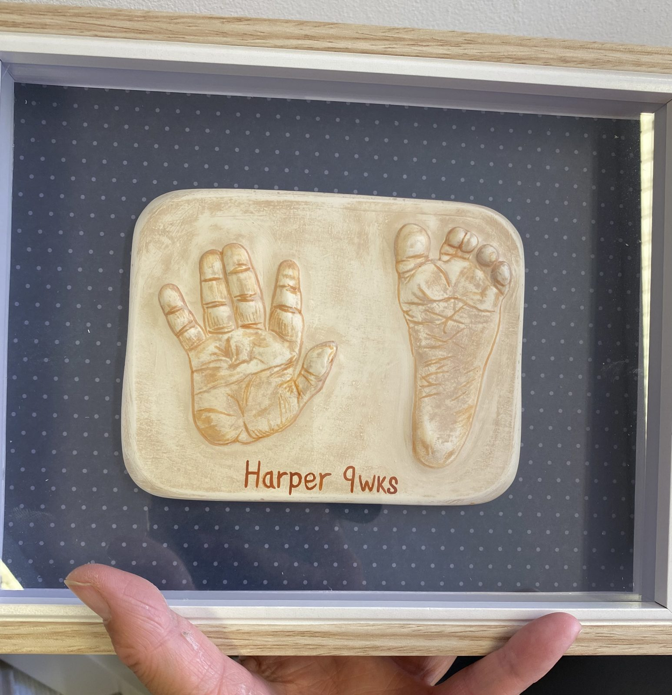
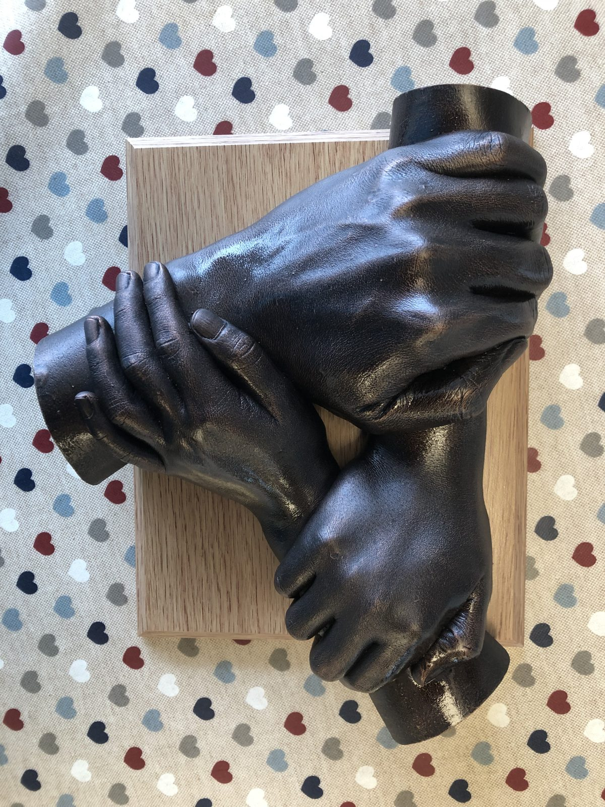

Bespoke baby prints · The gift no one else makes
Tiny hands, kept forever.
They grow faster than anyone warns you. One quiet morning at the studio, a gentle press into soft clay, and this exact week of their life stays with you.
Suitable from just a few days old. Posted anywhere in the UK.

Two ways to keep them
Honest prices, nothing hidden.
Painted ceramic prints
from £35
- A gentle press at the studio, minutes not hours
- Name and date hand-painted by Jo
- Glazed and fired twice
- Gift-boxed, ready in about 3 weeks
Raised 3D casts
from £60
- A deeper press for a raised, lifelike cast
- Choice of soft glaze finishes
- Oak or white box frame from £25
- Siblings, family and pet prints welcome
Every family's plate is different
A few that have come out of the kiln lately.





Clay is a slow craft, and that's the point
A gentle press into soft clay. Takes minutes.
Hand-painted and glazed in the studio.
Slow drying, two firings, a lasting finish.
Collect from the studio, or posted anywhere in the UK.
Questions parents ask
A gift they'll keep. Vouchers cover prints, casts and any workshop.
Gift a voucherTell me a little about your little one
Rather talk it through?
Or WhatsApp her a message and a photo of what you have in mind.
Mornings are quietest. If she's mid-firing, leave a message and she'll ring back the same day.